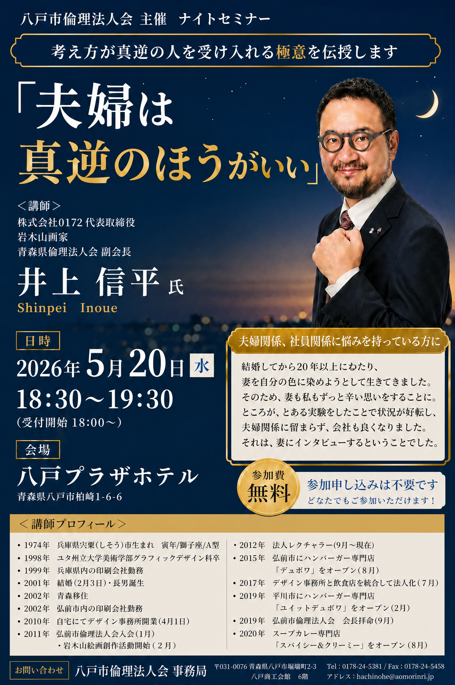

問題
「正しいことを言えば人は動く」と考え、夫婦にも社員にも自分の基準を求めていた。結果として、辞表や辞退者が続き、人間不信に近い状態まで追い込まれた。
八戸市倫理法人会 ナイトセミナー / 2026.05.20
正しさで人を動かそうとしていた経営者が、妻と社員の「違う視点」を受け入れ、 夫婦関係と会社の空気を変えていった講話。鍵は、勝ち負けを手放し、 「この人と一緒にいたい」と思われる人になること。

先にここだけ読めば全体像が掴める
「正しいことを言えば人は動く」と考え、夫婦にも社員にも自分の基準を求めていた。結果として、辞表や辞退者が続き、人間不信に近い状態まで追い込まれた。
妻・順子氏の見方や行動に触れ、自分と違う人は不快な存在ではなく、自分にない視点を持つ安心材料だと受け止め直した。
夫婦も会社も、相手を自分の色に染める場所ではない。違いを活かし、感謝を伝え、「一緒にいたい」と思われる人になることが経営を変える。
正しさの押し付けから、違いを活かす関係へ
起点から経営への波及まで
倫理を学んでいても、実際には「井上倫理」になっていた。正しいことを押し付けるほど、周囲は苦しくなる。
計画通りにいかないと心配する自分と、買い直せばいいと受け止める妻。その差が、自分のこだわりを映した。
自分は自分を直接見られない。妻や社員は実物を見ている。だから、周囲の声を聞く意味がある。
感謝を言葉と態度で伝え、関わる距離を縮める。職場を家族に薦める人が増え、会社の空気が変わった。
提供メモをもとに最小限整形
正しさが全てだと思っていた
夫婦は補い合うようにできている。二人で完成系
今は、違う考え方で見てくれてるから安心
妻や社員さんは実物を見てる。だから言うこと聞く
自分の役割は、倫理の正しさを解く事じゃない
人生はファン作り
AG-Works / CLS 文脈への翻訳
正論をそのまま出さず、相手の不安・現場感・納得の順序に合わせて変換する。
真逆の感覚を仕様の抜けを見つける検知器として扱う。
ありがとうを日報、レビュー、連絡の中で反復する。文化は言葉の反復でできる。
人を動かす前に、こちらから関わりたいと思い続けることを仕事にする。
問い合わせから納品後まで、「この会社と一緒にいたい」と思われる接点を設計する。
明示引用ではなく関連の可能性
Source: AG-Works seminar distillation note / confidence: medium